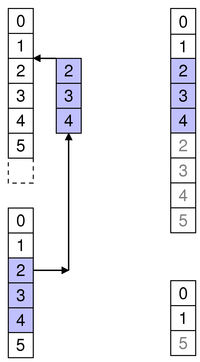
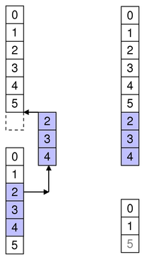
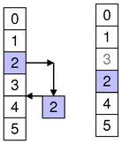

| Home · All Classes · Modules · QSS HELP · QSS 案例 · VER007 HOME |
该化QAbstractItemModel类提供抽象接口项目模型类。More...
继承QObject。
通过继承QAbstractListModel，QAbstractProxyModel，QAbstractTableModel，QDirModel，QFileSystemModel，QHelpContentModel，QProxyModel和QStandardItemModel。
该化QAbstractItemModel类提供抽象接口项目模型类。
在化QAbstractItemModel类定义了项目模型必须使用能够与互操作在模型/视图结构的其他组件的标准接口。它不应该被直接实例化。相反，你应该继承它来创建新的模型。
该化QAbstractItemModel类是一个Model/View Classes并且是Qt的一部分model/view framework。
如果你需要一个模型与使用QListView或QTableView，你应该考虑创建子类QAbstractListModel or QAbstractTableModel而不是这个类。
底层数据模型暴露的意见和代表作为表的层次结构。如果你不利用层次结构的，那么该模型是行和列的一个简单的表。每个项目都有一个指定的唯一索引QModelIndex。

数据的每一个项目，可以通过一个模型来访问具有相关联的模型索引。您可以使用获得此模型的指数index（）函数。每个索引可以具有sibling（ ）指数;子项有parent（ ）指数。
每一个项目都有一个数字与它相关的数据元素，它们可以通过指定一个角色进行检索（见Qt.ItemDataRole）到模型的data（）函数。可用于所有角色数据可以在同一时间使用获得的itemData（）函数。
每个角色数据是使用一个特定的设置Qt.ItemDataRole。对于个人角色数据被单独设置setData（ ） ，或者它们可以为所有角色设定setItemData（ ） 。
项目可以与查询flags（ ） （见Qt.ItemFlag） ，看看他们是否可以选择，拖动，或者以其它方式处理。
如果项目具有子对象，hasChildren（ ）为相应的索引返回True 。
该模型具有rowCount（）和一个columnCount（）的层次结构的各个层次。行和列可以被插入和移除insertRows（ ）insertColumns（ ）removeRows（）和removeColumns（ ） 。
该模型发出的信号来表示变化。例如，dataChanged（ ）被发射时由模型提供的数据项被改变。改变由模型事业提供的头文件headerDataChanged（）被发射。如果基础数据的变化的结构中，该模型可发射layoutChanged（ ）来表示任何附加意见，他们应该重新显示出任何物品，采取新的结构考虑。
可通过模型中的项目可以使用来搜索特定的数据match（）函数。
对模型进行排序，可以使用sort（ ） 。
Note:可在子类化模型的一些通用准则Model Subclassing Reference。
当子类化QAbstractItemModel ，最起码必须实现index（ ）parent（ ）rowCount（ ）columnCount（）和data（ ） 。这些功能全部采用只读模式，并形成可编辑模型的基础。
您也可以重新实现hasChildren（ ）提供模型的特殊行为，其中实施rowCount（）是昂贵的。这使得可以为模型，以限制由视图请求的数据量，并且可以作为一种方法来实现的模型数据的懒惰人口。
为了使编辑在模型中，你还必须实现setData（ ） ，并重新实现flags（） ，以确保ItemIsEditable返回。您也可以重新实现headerData（）和setHeaderData（ ）来控制标题为您的模型呈现的方式。
该dataChanged（）和headerDataChanged（ ）信号必须明确地重新实现时所发出的setData（）和setHeaderData（ ）函数，分别为。
定制机型需要建立索引模型为其他组件使用。要做到这一点，请致电createIndex（ ）与合适的行号和列号的项目，和一个标识符它，无论是作为一个指针或作为一个整数值。这些值的组合必须是唯一的每个项目。定制机型通常使用于其他函数重新实现这些唯一标识符来检索项目数据和访问有关该项目的家长和孩子的信息。请参阅Simple Tree Model Example关于唯一标识符的详细信息。
这是没有必要的，以支持在每个定义的角色Qt.ItemDataRole。根据包含在一个模型内的数据的类型，它可能只实施是有用的data（）函数返回有效信息的一些更常见的角色。大多数模型提供数据项的用于所述至少一个文本表示Qt.DisplayRole，乖巧的车型也应该提供有效的信息为Qt.ToolTipRole和Qt.WhatsThisRole。支持这些角色使模型能与Qt的标准视图中使用。然而，对于某些型号的处理高度专业化的数据，也可能是适当的，以提供数据仅用于用户定义的角色。
模型，提供接口来调整大小的数据结构可以提供的实现insertRows（ ）removeRows（ ）insertColumns（）和removeColumns（ ） 。当实现这些功能，它通知有关更改模型的尺寸连接任何意见都是很重要before和after发生：
该private这些函数发出给连接组件的机会之前，任何数据采取行动的信号变得不可用。所述插入件的封装和除去这些操作的开始和结束的功能还可以使模型的管理persistent model indexes正确。If you want selections to be handled properly, you must ensure that you call these functions.如果你插入或删除一个项目有孩子，你不需要调用这些函数的子项。换句话说，父项将其子项的照顾。
要创建填充增量模型，你可以重新实现fetchMore（）和canFetchMore（ ） 。如果重新实现fetchMore（ ）添加行的模式，beginInsertRows()和endInsertRows()必须被调用。
该parent的说法，如果不是没有，原因self通过Qt的，而不是PyQt的拥有。
构造一个抽象的概念模型与给定parent。
开始一个列的插入操作。
当重新实现insertColumns（ ）的一个子类，则必须调用此函数before将数据插入到模型的底层数据存储。
该parent索引对应于被插入的新列的父;first和last是新列的列号将有被插入后，他们。
| Specify the first and last column numbers for the span of
columns you want to insert into an item in a model.
例如，如该图所示，我们插入3列第4列之前，所以first是4和last是6 ： beginInsertColumns(parent, 4, 6); 这会插入三个新列的列4 ， 5 ，和6 。 |
|
 |
To append columns, insert them after the last column.
例如，如图所示，我们追加三列六个现有列（第5列结束）的集合，所以first是6和last8 ： beginInsertColumns(parent, 6, 8); 这追加了两个新列作为列6 ， 7 ，和8。 |
Note:此功能会发出columnsAboutToBeInserted（），它连接视图（或股东代理人）信号必须处理插入数据之前。否则，意见最终可能会处于无效状态。
See also endInsertColumns（ ） 。
开始的行插入操作。
当重新实现insertRows（ ）的一个子类，则必须调用此函数before将数据插入到模型的底层数据存储。
该parent索引对应于被插入新行的父;first和last是行号，新行将有被插入后，他们。
 |
Specify the first and last row numbers for the span of rows you
want to insert into an item in a model.
例如，如该图所示，我们插入3行第2列之前，所以first是2和last是4 ： beginInsertRows(parent, 2, 4); 这会插入三个新行作为行2 ， 3 ，和4 。 |
| To append rows, insert them after the last row.
例如，如该图所示，我们追加两行的4现有的行（第3行结束）的集合，所以first是4和last是5 ： beginInsertRows(parent, 4, 5); 这追加两个新行的行4和5 。 |
Note:此功能会发出rowsAboutToBeInserted（），它连接视图（或股东代理人）信号必须处理插入数据之前。否则，意见最终可能会处于无效状态。
See also endInsertRows（ ） 。
开始一列移动操作。
当重新实现一个子类，这种方法在你的模型简化移动实体。这个方法是负责移动持久指标在模型中，它，否则你会被要求做自己。使用beginMoveRows和endMoveRows是替代发光layoutAboutToBeChanged和layoutChanged直接随着changePersistentIndexes 。 layoutAboutToBeChanged通过该方法出于兼容性原因射出。
该sourceParent索引对应于从该列移动的母公司;sourceFirst和sourceLast是该列的第一列和最后一列数字移动。该destinationParent索引对应于所述父到其中的那些列被移动。该destinationChild是该组将被移到该列。即，在列中的索引sourceFirst在sourceParent将成为列destinationChild在destinationParent，然后是所有其他列达sourceLast。
然而，在相同的父（移动列下来的时候sourceParent和destinationParent是相等的），则columnss将放置前的destinationChild索引。也就是说，如果你想移动列0和1，因此他们将成为列1和2 ，destinationChild应该是3 。在这种情况下，用于源列的新索引i（这是间sourceFirst和sourceLast）等于(destinationChild-sourceLast-1+i)。
注意，如果sourceParent和destinationParent都是一样的，你必须确保destinationChild不是的范围内sourceFirst和sourceLast+1。您还必须确保您不要尝试将列移动到其自己的孩子或祖先之一。此方法返回False，如果任一条件为真，在这种情况下，你应该放弃你的移动操作。
此功能被引入Qt的4.6 。
See also endMoveColumns（ ） 。
开始连续移动操作。
当重新实现一个子类，这种方法在你的模型简化移动实体。这个方法是负责移动持久指标在模型中，它，否则你会被要求做自己。使用beginMoveRows和endMoveRows是替代发光layoutAboutToBeChanged和layoutChanged直接随着changePersistentIndexes 。 layoutAboutToBeChanged通过该方法出于兼容性原因射出。
该sourceParent索引对应于从该行的移动母公司;sourceFirst和sourceLast是行的第一行和最后一行的数字移动。该destinationParent索引对应于所述父到其中的那些行被移动。该destinationChild是行，这些行会被感动。即，该指数在排sourceFirst在sourceParent将成为排destinationChild在destinationParent，接着所有其他行到sourceLast。
然而，在相同的父（移动排下来的时候sourceParent和destinationParent是相等的） ，这些行会被放置前的destinationChild索引。也就是说，如果你要移动的行0和1，因此他们将成为行1和2 ，destinationChild应该是3 。在这种情况下，用于源行新的索引i（这是间sourceFirst和sourceLast）等于(destinationChild-sourceLast-1+i)。
注意，如果sourceParent和destinationParent都是一样的，你必须确保destinationChild不是的范围内sourceFirst和sourceLast+1。您还必须确保您不要尝试将行移动到其自己的孩子或祖先之一。此方法返回False，如果任一条件为真，在这种情况下，你应该放弃你的移动操作。
|  | Specify the first and last row numbers for the span of rows in
the source parent you want to move in the model. Also specify the
row in the destination parent to move the span to.
例如，如该图所示，我们将3行从行2至4中的源中，所以sourceFirst是2和sourceLast是4。我们将这些物品上面第2行的目的地，所以destinationChild是2。 beginMoveRows(sourceParent, 2, 4, destinationParent, 2); 这将移动源中的3行的行2 ，3和4 ，成为2 ，3和4中的目的地。其他受影响的兄弟姐妹都相应地偏移。 |
|  | To append rows to another parent, move them to after the last
row.
例如，如图所示，我们把三排的6现有的行（在第5行结束）的集合，所以destinationChild是6 ： beginMoveRows(sourceParent, 2, 4, destinationParent, 6); 这将移动目标的行到目标父的末端为6,7和8 。 |
 |
To move rows within the same parent, specify the row to move
them to.
例如，如该图所示，我们将一个项目从第2行到第0行，所以sourceFirst和sourceLast是2和destinationChild为0。 beginMoveRows(parent, 2, 2, parent, 0); 注意，其它行可以相应地移动。还要注意的是移动的同一个父内物品时，你不应该试图无效或无操作动作。在上面的例子中，第2项是在移动之前排2 ，所以它不能被移动到第2行（其中，这已经是）或行3 （无操作如第3行的手段上述第3行，其中它已经是） |
|  | To move rows within the same parent, specify the row to move
them to.
例如，如该图所示，我们将一个项目从第2行到第4行，所以sourceFirst和sourceLast是2和destinationChild是4。 beginMoveRows(parent, 2, 2, parent, 4); 注意，其它行可以相应地移动。 |
此功能被引入Qt的4.6 。
See also endMoveRows（ ） 。
开始的列删除操作。
当重新实现removeColumns（ ）的一个子类，则必须调用此函数before去除模型的底层数据存储的数据。
该parent索引对应于从该新的列被删除父;first和last是要移除的第一个和最后一列的列号。
 |
Specify the first and last column numbers for the span of
columns you want to remove from an item in a model.
例如，如该图所示，我们从柱4取出3列至第6列，所以first是4和last是6 ： beginRemoveColumns(parent, 4, 6); |
Note:此功能会发出columnsAboutToBeRemoved（），它连接视图（或股东代理人）信号必须处理的数据被删除之前。否则，意见最终可能会处于无效状态。
See also endRemoveColumns（ ） 。
开始的行删除操作。
当重新实现removeRows（ ）的一个子类，则必须调用此函数before去除模型的底层数据存储的数据。
该parent索引对应于从该新行被删除的父;first和last将被删除的行的行号。
 |
Specify the first and last row numbers for the span of rows you
want to remove from an item in a model.
例如，如该图所示，我们从第2行取出两排至3行中，所以first是2和last是3： beginRemoveRows(parent, 2, 3); |
Note:此功能会发出rowsAboutToBeRemoved（），它连接视图（或股东代理人）信号必须处理的数据被删除之前。否则，意见最终可能会处于无效状态。
See also endRemoveRows（ ） 。
开始一个模型复位操作。
复位操作模式重置为它的当前状态在任何附加的看法。
Note:连接到这个模型中的任何意见都会被重置为好。
当一个模型被复位就意味着从模型报告的任何先前的数据现在是无效的，并且必须再次查询的。这也意味着，目前的项目和任何选定的项目将变得无效。
当一个模型从根本上改变它的数据它有时是容易只是调用这个函数，而不是发出dataChanged（ ）当基础数据源，或者它的结构，改变通知其他组件。
重置所有的内部数据结构中的模型或代理模型之前，必须调用此函数。
此功能被引入Qt的4.6 。
See also modelAboutToBeReset（ ）modelReset（）和endResetModel（ ） 。
返回由代表该项目的哥们一个模型索引index。当用户希望编辑某个项目，视图将调用这个函数来检查模型中的另一个项目是否应该被编辑来代替。然后，视图将使用由哥们项目返回的模型索引构造一个委讬。
此函数的默认实现每个项目作为自己的哥们。
返回True如果没有可用于更多的数据parent否则返回False 。
默认的实现始终返回False 。
如果canFetchMore （ ）返回True ，QAbstractItemView将调用fetchMore（ ） 。然而，本fetchMore当模型被填充增量（ ）函数只被调用。
See also fetchMore（ ） 。
更改QPersistentModelIndex也就是等于给定from模型索引为给定的to模型索引。
如果没有持续性模型指数等于给定from模型索引被发现，没有什么改变。
See also persistentIndexList（）和changePersistentIndexList（ ） 。
变化，它等于该索引中给出的QPersistentModelIndexesfrom模型索引列表，以给定的to模型索引列表。
如果没有持久化模型的索引等于该指标在给定的from模型索引列表被发现，没有什么改变。
这个函数是Qt 4.1中引入。
See also persistentIndexList（）和changePersistentIndex（ ） 。
这种方法是抽象的，应在任何子类中重新实现。
返回列的数目为给定的子parent。
在大多数的子类，列数是独立的parent。
例如：
int DomModel.columnCount(const QModelIndex &/*parent*/) const { return 3; }
Note:当实现一个基于表的模型，列数（）应该返回0当父是有效的。
See also rowCount（ ） 。
创建用于给定一个模型索引row和column与内部指针ptr。
当使用一个QSortFilterProxyModel，其指标有自己的内部指针。这是不可取的访问此内部指针模型的外侧。使用data（ ）函数来代替。
此功能提供了该模型的子类必须使用它来创建模型的索引一致的接口。
这种方法是抽象的，应在任何子类中重新实现。
返回下指定存储的数据role由所提及的项目index。
Note:如果你没有一个值返回，返回invalid QVariant而不是返回0 。
See also Qt.ItemDataRole，setData（）和headerData（ ） 。
处理data通过拖放操作，与给定的供给结束action。
返回True如果数据和动作可以通过模型来处理，否则返回False 。
指定row，column和parent表明在该操作结束，其中模型项的位置。它是该模型的责任完成动作在正确的位置。
例如，在一个上一个项目一个放置操作QTreeView可能导致要么被插入的项目由指定儿童的新项目row，column和parent，或作为该项目的兄弟姐妹。
When row和column是-1则表示放置的数据应被视为直接丢弃在parent。通常，这将意味着追加数据的子项parent。如果row和列都大于或等于零，则意味着降刚刚指定之前发生row和column在指定的parent。
See also supportedDropActions（）和Using drag and drop with item views。
完一列的插入操作。
当重新实现insertColumns（ ）的一个子类，则必须调用此函数after将数据插入到模型的底层数据存储。
See also beginInsertColumns（ ） 。
结尾的行插入操作。
当重新实现insertRows（ ）的一个子类，则必须调用此函数after将数据插入到模型的底层数据存储。
See also beginInsertRows（ ） 。
完一列移动操作。
当实现一个子类，则必须调用此函数after模型的底层数据存储中移动数据。
layoutChanged通过该方法出于兼容性原因射出。
此功能被引入Qt的4.6 。
See also beginMoveColumns（ ） 。
完一排移动操作。
当实现一个子类，则必须调用此函数after模型的底层数据存储中移动数据。
layoutChanged通过该方法出于兼容性原因射出。
此功能被引入Qt的4.6 。
See also beginMoveRows（ ） 。
完一列删除操作。
当重新实现removeColumns（ ）的一个子类，则必须调用此函数after去除模型的底层数据存储的数据。
See also beginRemoveColumns（ ） 。
结束连续切除手术。
当重新实现removeRows（ ）的一个子类，则必须调用此函数after去除模型的底层数据存储的数据。
See also beginRemoveRows（ ） 。
完成一个模型复位操作。
你必须在你的模型或代理模型重置任何内部数据结构之后，调用此函数。
此功能被引入Qt的4.6 。
See also beginResetModel（ ） 。
获取由指定的项目与父任何可用的数据parent索引。
重新实现这一点，如果你是填充模型增量。
默认实现不执行任何操作。
See also canFetchMore（ ） 。
返回项标志为给定的index。
基类实现返回标志的组合，使该项目（ItemIsEnabled） ，并允许它被选中（ItemIsSelectable） 。
See also Qt.ItemFlags。
返回True如果parent有任何子女;否则返回False。
使用rowCount（ ）父，找出孩子的数量。
返回True如果模型返回一个有效的QModelIndex为row和column同parent，否则返回False 。
返回数据为给定的role和section在用指定的标头orientation。
水平标头，把该分区编号相对应的列数。类似地，对于垂直标题，章节号对应的行号。
See also Qt.ItemDataRole，setHeaderData（）和QHeaderView。
这种方法是抽象的，应在任何子类中重新实现。
返回由给定指定的模型项的索引row，column和parent索引。
当重新实现在子类中这个函数，调用createIndex（）来生成其他组件可以用来参考的项目模型中的模型索引。
See also createIndex（ ） 。
给定前插入一列column中的子项parent规定。
返回True如果插入的列，否则返回False 。
See also insertColumns（ ）insertRow（）和removeColumn（ ） 。
在支持此模式，插入count新列到模型中给定的前column。在每个新列中的项目将成为该项目由儿童代表parent模型索引。
If column为0时，列追加到任何现有的列。
If column is columnCount（）中，列被附加到任何现有的列。
If parent没有孩子，一个单列带count列被插入。
返回True如果成功插入的列，否则返回False 。
基类的实现不执行任何操作并返回False 。
如果你实现了自己的模型，你可以，如果你想支持插入重新实现此功能。或者，您也可以提供自己的API，用于改变数据。
See also insertRows（ ）removeColumns（ ）beginInsertColumns（）和endInsertColumns（ ） 。
Note:基类实现这个功能不执行任何操作并返回False 。
给定前插入一个单行row中的子项parent规定。
返回True如果被插入的行，否则返回False 。
See also insertRows（ ）insertColumn（）和removeRow（ ） 。
Note:基类实现这个功能不执行任何操作并返回False 。
在支持此模式，插入count行插入到模型中给定前row。在新行项目将成为该项目由儿童代表parent模型索引。
If row为0时，行前加上父的任何现有行。
If row is rowCount（ ） ，该行被追加到父任何现有行。
If parent没有孩子，与一列count行插入。
返回True如果成功插入的行，否则返回False 。
如果你实现了自己的模型，你可以，如果你想支持插入重新实现此功能。或者，您也可以提供自己的API，用于改变数据。在这两种情况下，你将需要调用beginInsertRows（）和endInsertRows（） ，用于通知该模型已经改变其他组件。
See also insertColumns（ ）removeRows（ ）beginInsertRows（）和endInsertRows（ ） 。
返回一个值模型对项目的所有预定义角色一个地图上的指定index。
如果你想扩展这个功能的默认行为，包括在地图上自定义角色重新实现这个函数。
See also setItemData（ ）Qt.ItemDataRole和data（ ） 。
返回索引中的列中的项目清单start如根据给定的存储的数据索引role匹配指定value。搜索的执行方式是由定义flags给出。返回的列表可能是空的。
搜索开始从start指数，并继续进行，直到匹配的数据项的数目等于hits，搜索到达最后一排，或者搜索到达start再次 - 这取决于是否MatchWrap在被指定flags。如果你想搜索所有匹配的项，请使用hits= -1 。
默认情况下，该功能将执行对所有项目的包装，基于字符串的比较，寻找开头所指定的搜索条件的项目value。
Note:这个函数的默认实现只搜索列。重新实现此功能可包括不同的搜索行为。
该QMimeData结果
返回一个对象，它包含的数据序列化的项对应列表indexes规定。用于描述编码数据的格式是从所获得的mimeTypes（）函数。
如果索引列表是空的，或者没有支持的MIME类型，则返回0 ，而不是一个序列化的空单。
See also mimeTypes（）和dropMimeData（ ） 。
返回可用于描述模型索引的列表的MIME类型的列表。
See also mimeData（ ） 。
这种方法是抽象的，应在任何子类中重新实现。
返回模型项目的父与给定index。如果该项目没有父，无效QModelIndex返回。
，揭露树数据结构模型中使用一个共同的约定是，在第一列的项目只生孩子。对于这种情况，在子类中重新实现此功能，当返回的列QModelIndex将是0 。
当重新实现在子类中这个功能，要小心避免调用QModelIndex构件的功能，如QModelIndex.parent（ ） ，因为属于你的模型索引可以简单的叫你的实现，从而导致无限递归。
See also createIndex（ ） 。
返回作为模型中的持久性索引的存储的索引列表。
这个函数中引入了Qt 4.2中。
删除给定的column从该子项parent规定。
Returns true if the column is removed; otherwise returns false.
See also removeColumns（ ）removeRow（）和insertColumn（ ） 。
在支持此模式，会删除count从给定的列column在父parent从模型。
返回True如果列被成功删除，否则返回False 。
基类的实现不执行任何操作并返回False 。
如果你实现了自己的模型，你可以，如果你想支持删除重新实现此功能。或者，您也可以提供自己的API，用于改变数据。
See also removeColumn（ ）removeRows（ ）insertColumns（ ）beginRemoveColumns（）和endRemoveColumns（ ） 。
删除给定的row从该子项parent规定。
返回True如果该行被删除，否则返回False 。
这是一个方便的功能调用removeRows（ ） 。该QAbstractItemModel实施removeRows（ ）什么也不做。
See also removeRows（ ）removeColumn（）和insertRow（ ） 。
在支持此模式，会删除count从给定的行row在父parent从模型。
返回True如果行被成功取出，否则返回False 。
基类的实现不执行任何操作并返回False 。
如果你实现了自己的模型，你可以，如果你想支持删除重新实现此功能。或者，您也可以提供自己的API，用于改变数据。
See also removeRow（ ）removeColumns（ ）insertColumns（ ）beginRemoveRows（）和endRemoveRows（ ） 。
该模式重置为在任何连接的观点其原始状态。
Note:使用beginResetModel（）和endResetModel（ ），而不是只要有可能。使用此方法只有在没有办法来调用beginResetModel（ ）无效的模型前。否则，可能会导致意外的行为，与代理模式使用时尤其如此。
这种方法也是一个Qt槽与C + +的签名void resetInternalData()。
这个槽被调用后只是一个模型的内部数据，而它被复位清零。
该槽设置的混凝土代理模型的子类的便利性，例如子类QSortFilterProxyModel它保持额外的数据。
class CustomDataProxy : public QSortFilterProxyModel { Q_OBJECT public: CustomDataProxy(QObject *parent) : QSortFilterProxyModel(parent) { } ... QVariant data(const QModelIndex &index, int role) { if (role != Qt.BackgroundRole) return QSortFilterProxyModel.data(index, role); if (m_customData.contains(index.row())) return m_customData.value(index.row()); return QSortFilterProxyModel.data(index, role); } private slots: void resetInternalData() { m_customData.clear(); } private: QHash<int, QVariant> m_customData; };
此功能被引入Qt的4.8 。
See also modelAboutToBeReset（）和modelReset（ ） 。
这种方法也是一个Qt槽与C + +的签名void revert()。
让模型知道它应该丢弃缓存信息。此功能通常用于行编辑。
See also submit（ ） 。
返回模型的角色名称。
此功能被引入Qt的4.6 。
See also setRoleNames（ ） 。
这种方法是抽象的，应在任何子类中重新实现。
返回下给定的行数parent。当父是有效则表示rowCount等是返回父孩子的数量。
Note:当实现一个基于表的模型， rowCount等（）应该返回0当父是有效的。
See also columnCount（ ） 。
设置role对于在项目数据index至value。
成功返回True ，否则返回False 。
该dataChanged（）信号应被发射，如果数据被成功设置。
基类实现返回False 。此功能与data（ ）必须被重新实现可编辑的模型。
See also Qt.ItemDataRole，data（）和itemData（ ） 。
设置数据为给定的role和section在用指定的标头orientation到value提供。
返回True如果标头的数据进行了更新，否则返回False 。
当重新实现此功能，headerDataChanged（）信号必须被明确地射出。
See also Qt.ItemDataRole和headerData（ ） 。
设置角色数据，该项目在index在相关联的值roles，对于每Qt.ItemDataRole。
成功返回True ，否则返回False 。
角色不在roles将不会被修改。
See also setData（ ）data（）和itemData（ ） 。
设置模型的角色名roleNames。
此功能允许在声明式UI角色，属性名角色标识符的映射。该模型使用之前这个函数必须被调用。该模型已被设置后，修改角色名，可能会导致未定义的行为。
此功能被引入Qt的4.6 。
See also roleNames（ ） 。
设置支持拖放actions为模型中的项。
这个函数中引入了Qt 4.2中。
See also supportedDragActions（）和Using drag and drop with item views。
返回在同级row和column对于在项目index，或无效QModelIndex如果没有兄弟在该位置。
兄弟（ ）只是一个方便的功能，发现该项目的父，并使用它来检索指定的子项的索引row和column。
See also index（ ）QModelIndex.row（）和QModelIndex.column（ ） 。
通过排序模型column在给定的order。
基类的实现不执行任何操作。
返回由所代表的项目的行和列跨度index。
Note:目前，不使用跨度。
这种方法也是一个Qt槽与C + +的签名bool submit()。
让模型知道它应该提交缓存信息到永久存储。此功能通常用于行编辑。
返回True如果没有错误，否则返回False 。
See also revert（ ） 。
返回通过此模型中的数据所支持的行动。
默认实现返回supportedDropActions（ ），除非特定的值被设置setSupportedDragActions（ ） 。
supportedDragActions （ ）是用来通过QAbstractItemView.startDrag（）作为当发生拖拽时的默认值。
See also setSupportedDragActions（ ）Qt.DropActions和Using drag and drop with item views。
返回此模型所支持的放置动作。
默认实现返回Qt.CopyAction。如果你想支持额外的动作重新实现这个函数。您还必须重新实现dropMimeData（ ）函数来处理额外的操作。
这个函数中引入了Qt 4.2中。
See also dropMimeData（ ）Qt.DropActions和Using drag and drop with item views。
这是该信号的默认超载。
这个信号被发射列被插入到模型之前。新项目将被定位之间start和end包容性，在给定的parent项目。
Note:连接到该信号成分用它来适应变化的模型的尺寸。它只能由发射QAbstractItemModel实现，并且不能明确地在子码发射。
See also insertColumns（）和beginInsertColumns（ ） 。
这是该信号的默认超载。
这个信号被发射之前列模型内移动。将要移动的项目是那些之间sourceStart和sourceEnd包容性，在给定的sourceParent项目。他们将被移动到destinationParent开始在列destinationColumn。
Note:连接到该信号成分用它来适应变化的模型的尺寸。它只能由发射QAbstractItemModel实现，并且不能明确地在子码发射。
此功能被引入Qt的4.6 。
See also beginMoveRows（ ） 。
这是该信号的默认超载。
这个信号被发射列被从模型中移除之前。要删除的项目是指之间start和end包容性，在给定的parent项目。
Note:连接到该信号成分用它来适应变化的模型的尺寸。它只能由发射QAbstractItemModel实现，并且不能明确地在子码发射。
See also removeColumns（）和beginRemoveColumns（ ） 。
这是该信号的默认超载。
列被插入到模型中后，此信号被发射。新项目是指之间start和end包容性，在给定的parent项目。
Note:连接到该信号成分用它来适应变化的模型的尺寸。它只能由发射QAbstractItemModel实现，并且不能明确地在子码发射。
See also insertColumns（）和beginInsertColumns（ ） 。
这是该信号的默认超载。
这个信号被发射的模型内的列已被移动之后。之间的项目sourceStart和sourceEnd包容性，在给定的sourceParent项目已移至destinationParent开始在列destinationColumn。
Note:连接到该信号成分用它来适应变化的模型的尺寸。它只能由发射QAbstractItemModel实现，并且不能明确地在子码发射。
此功能被引入Qt的4.6 。
See also beginMoveRows（ ） 。
这是该信号的默认超载。
列已被从模型中移除之后，这个信号被发射。拆下的项目是那些之间start和end包容性，在给定的parent项目。
Note:连接到该信号成分用它来适应变化的模型的尺寸。它只能由发射QAbstractItemModel实现，并且不能明确地在子码发射。
See also removeColumns（）和beginRemoveColumns（ ） 。
这是该信号的默认超载。
这个信号被发射时在现有项目中的数据更改。
如果项目是相同的母公司，受影响的是那些之间topLeft和bottomRight包容性。如果该项目不具有相同的父，其行为是未定义的。
当重新实现setData（）函数，该信号必须被明确地射出。
See also headerDataChanged（ ）setData（）和layoutChanged（ ） 。
这是该信号的默认超载。
这个信号被发射时的报头被改变。该orientation表示水平或垂直头是否已改变。在从标题中的章节first到last需要被更新。
当重新实现setHeaderData（）函数，该信号必须被明确地射出。
如果要更改的行或列数你不需要发出这个信号，但使用开始/结束功能（指在子类上一节QAbstractItemModel类描述详情） 。
See also headerData（ ）setHeaderData（）和dataChanged（ ） 。
这是该信号的默认超载。
这个信号被发射一个模型的布局被改变之前。连接到该信号成分用它来适应变化的模型的布局。
子类应发光layoutAboutToBeChanged （ ）后更新任何持久性模型索引。
这个函数中引入了Qt 4.2中。
See also layoutChanged（）和changePersistentIndex（ ） 。
这是该信号的默认超载。
这个信号被发射时通过模型暴露项的布局改变了，例如，当该模型已排序。当收到一个针对这一信号，它应更新项目的布局，以反映这一变化。
当子类QAbstractItemModel or QAbstractProxyModel，请确保您发出layoutAboutToBeChanged（ ）改变项目的顺序或改变你面对的看法，改变布局后发出layoutChanged （ ）的数据结构之前。
子类应发光layoutChanged （ ）之前更新任何持久性模型索引。换句话说，该结构变化时：
See also layoutAboutToBeChanged（ ）dataChanged（ ）headerDataChanged（ ）modelReset（）和changePersistentIndex（ ） 。
这是该信号的默认超载。
这个信号被发射时reset（ ）被调用时，模型的内部状态（例如持久化模型指标）已经失效之前。
这个函数中引入了Qt 4.2中。
See also beginResetModel（）和modelReset（ ） 。
这是该信号的默认超载。
这个信号被发射时reset（ ）被调用时，模型的内部状态（例如持久化模型指标）已经无效后。
这个函数是Qt 4.1中引入。
See also endResetModel（）和modelAboutToBeReset（ ） 。
这是该信号的默认超载。
这个信号被发射的行被插入到模型之前。新项目将被定位之间start和end包容性，在给定的parent项目。
Note:连接到该信号成分用它来适应变化的模型的尺寸。它只能由发射QAbstractItemModel实现，并且不能明确地在子码发射。
See also insertRows（）和beginInsertRows（ ） 。
这是该信号的默认超载。
这个信号被发射之前的行的模型内移动。将要移动的项目是那些之间sourceStart和sourceEnd包容性，在给定的sourceParent项目。他们将被移动到destinationParent开始于行destinationRow。
Note:连接到该信号成分用它来适应变化的模型的尺寸。它只能由发射QAbstractItemModel实现，并且不能明确地在子码发射。
此功能被引入Qt的4.6 。
See also beginMoveRows（ ） 。
这是该信号的默认超载。
这个信号被发射行从模型中删除之前。将要删除的项目是那些之间start和end包容性，在给定的parent项目。
Note:连接到该信号成分用它来适应变化的模型的尺寸。它只能由发射QAbstractItemModel实现，并且不能明确地在子码发射。
See also removeRows（）和beginRemoveRows（ ） 。
这是该信号的默认超载。
行被插入该模型之后，这个信号被发射。新项目是指之间start和end包容性，在给定的parent项目。
Note:连接到该信号成分用它来适应变化的模型的尺寸。它只能由发射QAbstractItemModel实现，并且不能明确地在子码发射。
See also insertRows（）和beginInsertRows（ ） 。
这是该信号的默认超载。
这个信号被发射的模型内的行已被移动之后。之间的项目sourceStart和sourceEnd包容性，在给定的sourceParent项目已移至destinationParent开始于行destinationRow。
Note:连接到该信号成分用它来适应变化的模型的尺寸。它只能由发射QAbstractItemModel实现，并且不能明确地在子码发射。
此功能被引入Qt的4.6 。
See also beginMoveRows（ ） 。
这是该信号的默认超载。
行已被从模型中移除之后，这个信号被发射。拆下的项目是那些之间start和end包容性，在给定的parent项目。
Note:连接到该信号成分用它来适应变化的模型的尺寸。它只能由发射QAbstractItemModel实现，并且不能明确地在子码发射。
See also removeRows（）和beginRemoveRows（ ） 。
| PyQt 4.10.3 for X11 | Copyright © Riverbank Computing Ltd and Nokia 2012 | Qt 4.8.5 |